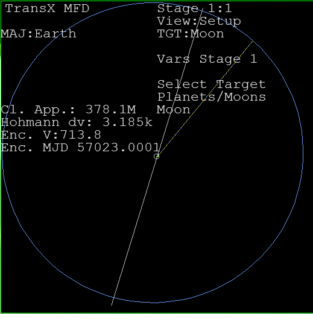
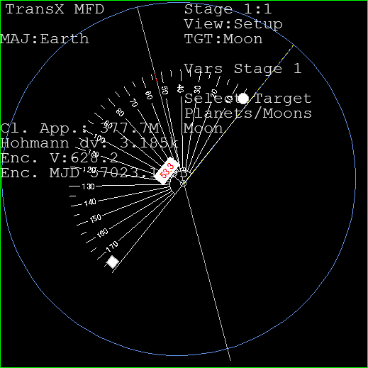
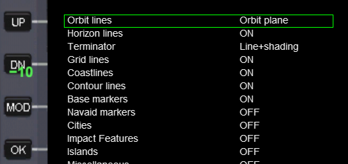
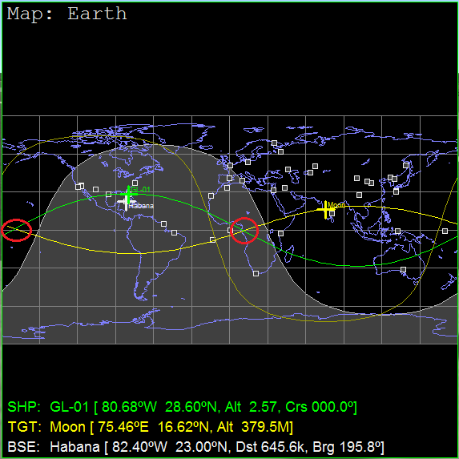
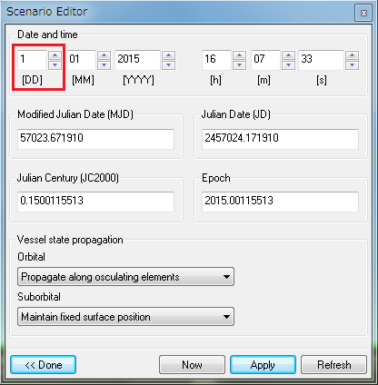
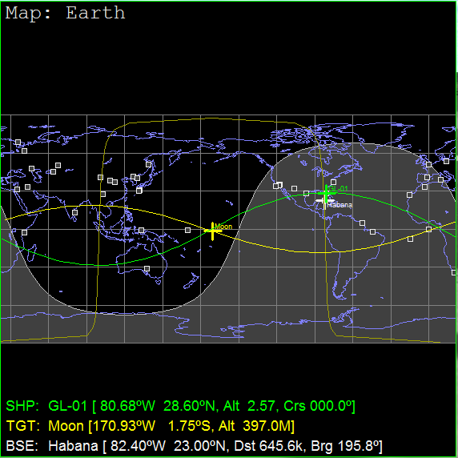
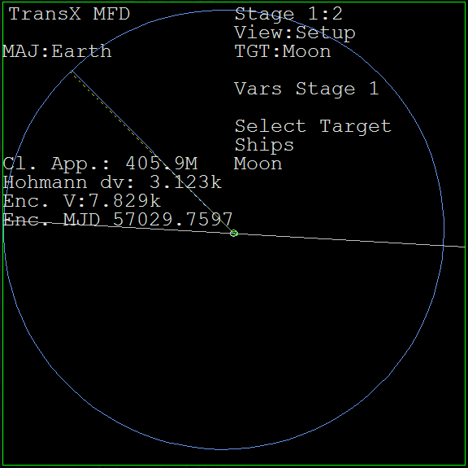
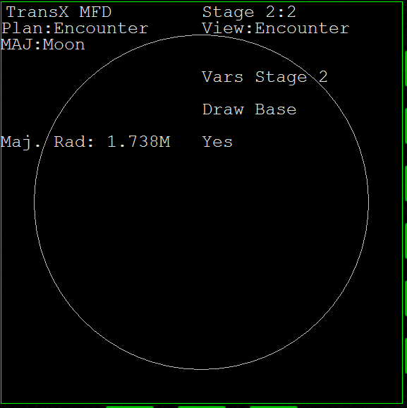
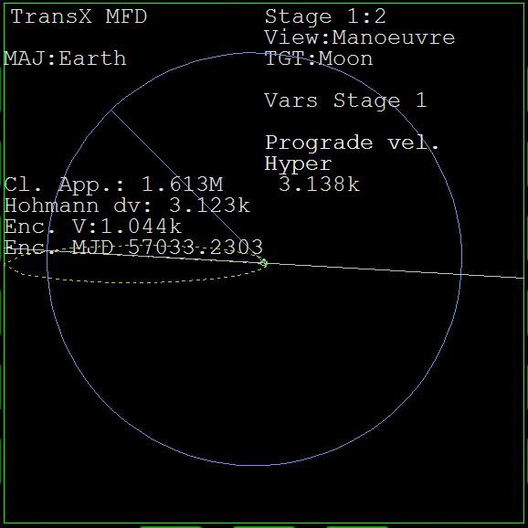
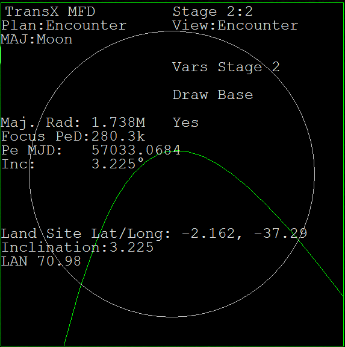

地球―月でのOff-plane transfer
地球から月へのフライトについて、チュートリアルでは「地球周回軌道上で軌道面を月と一致させる」という方法を紹介しました。
今回は、軌道面を一致させない（Align planes MFDを使わない）Off-plane transferについて解説します。
打ち上げのタイミングを探す
Off-plane transferでは、打ち上げのタイミングが重要になります。
分度器かシナリオエディタのいずれかを使って、このタイミングを決定することができます。
Orbiterの基本操作については、Orbiterチュートリアルを参照してください。
Orbiterチュートリアル Part9 月への打ち上げ
分度器を使う場合
分度器を使って、打ち上げのタイミングを探す方法について解説します。
タイミングを計算する
TransXを開く。
Select TargetでMoonを選択。

今回は、打ち上げから月に到着するまでの時間を4日間とする。
白い直線は、自機の（真東に打ち上げたときの）軌道面と、ターゲットの軌道面の交線を表している。
青い直線は月の現在位置を表している。
青い線が4日後に白い線と重なるタイミングを狙って真東に打ち上げれば、そのまま月に行くことができる。
月の公転周期は27.3日であり、360÷27.3×4≒53である。
したがって、青い線と白い線のなす角度がおおよそ53°のときに打ち上げればよいということになる。
分度器で測る
この記事では「分度器で測りましょ」というフリーウェアを使用しています。
このソフトの使用方法については付属のマニュアルを参照してください。
タイムワープで時間経過させて、白い線と青い線のなす角度がおよそ53°になるのを待つ。

53°になったら、Off-plane transferを実行する。
シナリオエディタを使う場合
シナリオエディタを使って、打ち上げのタイミングを探す方法について解説します。
Map MFDを開いて、MFDの左のDSPボタンをクリック。
MODをクリックしてOrbit linesをOrbit planeにする。

TGTをクリックしてMoonをターゲットする。

自分の軌道面が緑、ターゲット（今回は月）の軌道面が黄色で表示されている。
ふたつの線は、2ヶ所（赤丸で囲んだところ）で交差している。
シナリオエディタを開いて、Date（日時の設定）をクリック。

DD（日）を操作する（一日ずつ増やす）と、Map MFDにおいて月が軌道面を移動する。

ふたつの線が交差するところに、月が重なるようにする。
多少ずれていても問題ない。
月が画像の位置に来たら、シナリオエディタを使って4日前に戻る。
Off-plane transferを実行する
TransXを使って、月までのホーマン軌道を作成します。
打ち上げから軌道投入まで
打ち上げのタイミングが決まったら、方位090（真東）に向かって軌道投入する。
とくに決まりはないが、高度200kmくらいの円軌道にしておく。
軌道に乗ったら、両方のMFDでTransXを開く。
View:SetupのSelect TargetでMoonを選択。

片方のMFDでFWDをクリックしてStage2にする。
VWをクリックしてView:Encounterにしておく。

マニューバを作成する
Stage1でView:Manoeuvreを開く。
Manoeuvre modeをOnにする。
Prograde vel.を操作して、だいたい3130（3.130k）にする。
（この数字は、地球周回軌道からホーマン軌道で月に向かう時のおおよその目安です）
Man. dateを操作して、黄色い直線と白い直線が重なるようにする。

Stage2のView:Encounterを見ながら、Prograde vel.とMan. dateを操作して、月に衝突するような軌道にする。

重要：OutwardとCh. planeは使いません。
ここから先の操作は、Orbiterチュートリアルの内容と同じです。
Part10 TransXで地球軌道から月へ(TLI)
Part12 月基地への軌道修正 1回目
解説
Off-plane transferの仕組みやメリットについては、以下の記事を参照してください。
Off-plane transferの補足解説